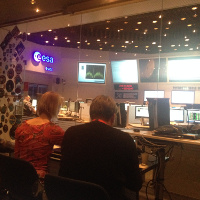

CometWatch 18-19 December

Today's CometWatch entry is a double feature, showing two NAVCAM images taken about twelve hours apart, on 18 and 19 December 2015, when Rosetta was around one hundred km from the comet nucleus. Read More...
Posted on 08/01/2016
New Comet Shape Model

A new 3D shape model of Comet 67P/Churyumov-Gerasimenko has been released by ESA’s Rosetta archive team today. The model includes images taken by Rosetta’s NAVCAM up until mid-late July 2015, and reveals parts of the comet’s southern hemisphere that were not included in earlier shape models.
Read More...
Posted on 30/11/2015
Reminiscing about the week of comet landing

This time last year saw the end of an extraordinary week at ESA's European Space Operations Centre in Darmstadt, Germany. Hundreds of journalists and reporters had gathered to witness an historic endeavour as on 12 November 2014 the Rosetta orbiter deployed the lander Philae on the surface of Comet 67P/Churyumov-Gerasimenko. In this blog post, some of our media friends reflect on the events of that memorable week and on one evening in particular.
Read More...
Posted on 17/11/2015